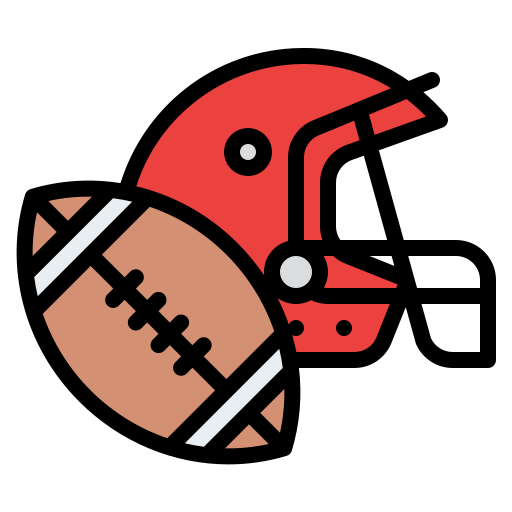
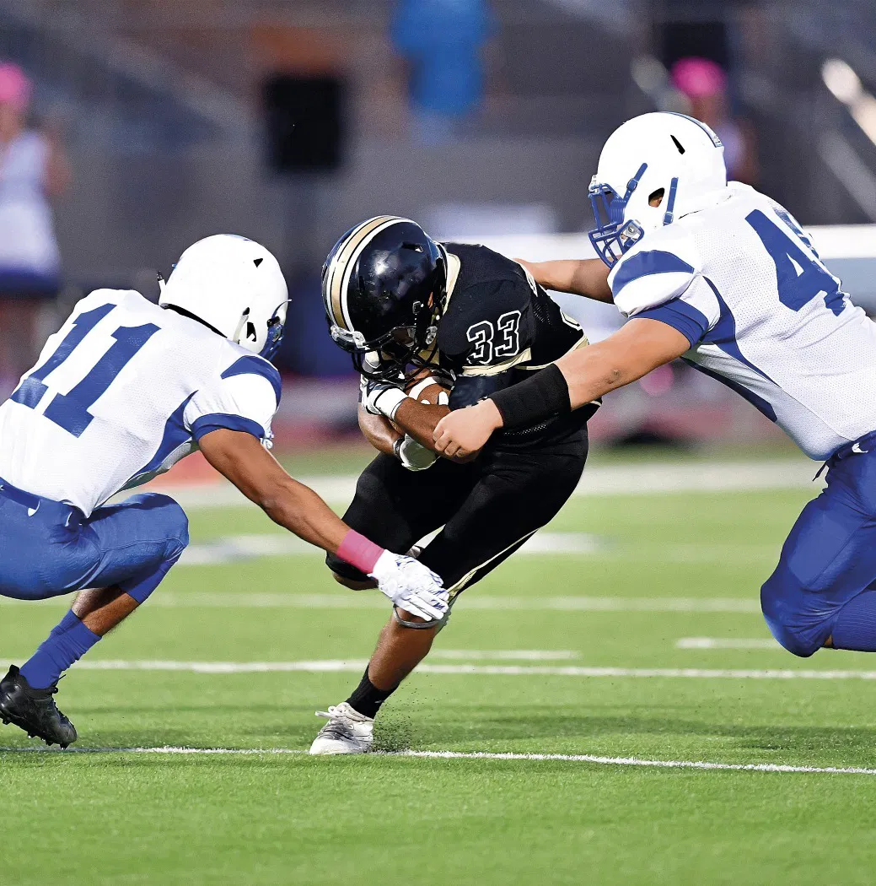

SportZone
 Futebol Americano
🔧 Como funciona:
Dois times de 11, atacando e defendendo em turnos.
Objetivo: avançar 100 jardas até a end zone e marcar o touchdown (6 pontos).
Equipe tem 4 "downs" para avançar 10 jardas — se conseguir, ganha mais 4.
Jogo dividido em 4 quartos de 15 minutos.

🏆 Principais ligas:
NFL (EUA): Liga número 1 do mundo.
Temporada regular → Playoffs → Super Bowl (final)
Jogadores históricos:
Tom Brady – Maior campeão da história (7 Super Bowls).
Jerry Rice – Lenda como wide receiver.
Joe Montana – QB icônico dos 49ers.
Peyton Manning – Um dos QBs mais respeitados.
Lawrence Taylor – Monstro da defesa.